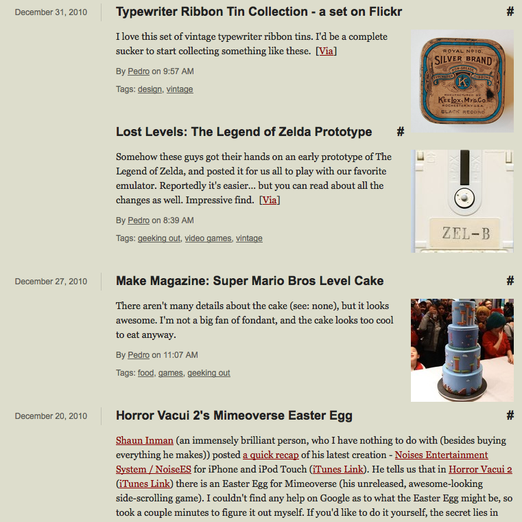

Longbored Surfer - Links, now with Photos

I admit it. I've been collecting images to go along with most of my links. I've been collecting them almost ever since I started hosting my own links (in April of 2009). Instead of hording the images for myself, I figured, it'd make the links (and site) a bit more appetizing if I actually served them, instead of just keeping them stored in the system. Your RSS feeds should be automatically updated with the new photos, and the site now looks a bit less dull, now populated with a bunch of images. Happy 2011.